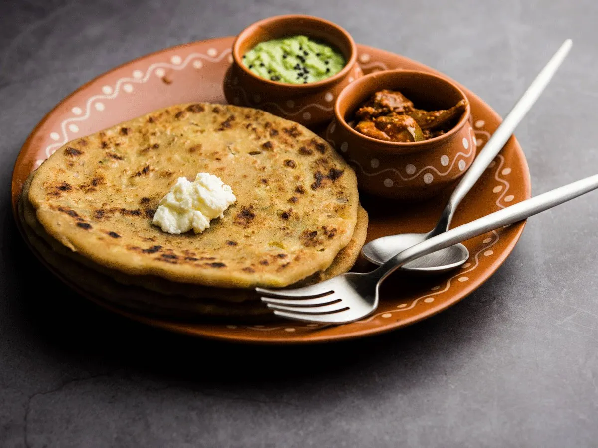
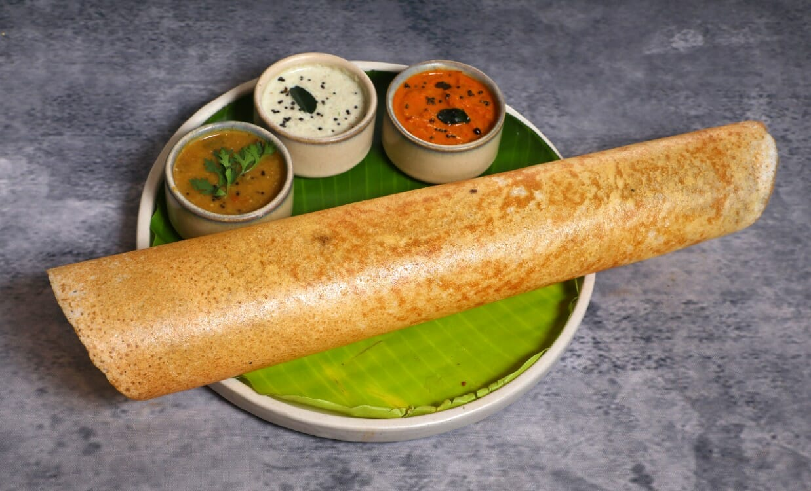

LIST OF FOOD ITEMS
Biriyani

Biryani is a mixed rice dish originating among the Muslims of South Asia and Iran. It is made with spices, vegetables, rice, and usually some type of meat (chicken, beef, goat, lamb, prawn, or fish). In some cases without any meat, and sometimes with eggs and potatoes.
Paratha

Paratha pronounce is a flatbread native to South Asia, prevalent throughout the modern-day nations of India, Sri Lanka, Pakistan, Nepal, Bangladesh, Maldives, Afghanistan, Myanmar, Malaysia, Singapore, Mauritius, Fiji, Guyana, Suriname, and Trinidad and Tobago where wheat is the traditional staple. Paratha is an amalgamation of the words parat and atta, which literally means layers of cooked dough.
Meals

A meal is an eating occasion that takes place at a certain time and includes consumption of food.The names used for specific meals in English vary, depending on the speaker's culture, the time of day, or the size of the meal. Although they can be eaten anywhere, meals typically take place in homes, restaurants, and cafeterias. Regular meals occur on a daily basis, typically several times a day.
Dosa

A dosa is a thin savory pancake in South Indian cuisine made from a fermented batter of ground black lentils and rice. Dosas are served hot, often with chutney and sambar. Dosa is a signature dish in South India and Sri Lanka, and is popularly served in their respective restaurants around the world.